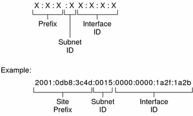
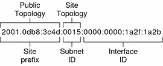

Previous
Previous
IPv6 Addressing Overview
IPv6 addresses are assigned to interfaces, rather than to nodes, in recognition that a node can have more than one interface. Moreover, you can assign more than one IPv6 address to an interface.
Note - For complete technical information about the IPv6 address format, go to RFC 2374, IPv6 Global Unicast Address Format
IPv6 defines three address types:
unicast | Identifies an interface of an individual node. |
multicast | Identifies a group of interfaces, usually on different nodes. Packets that are sent to the multicast address go to all members of the multicast group. |
anycast | Identifies a group of interfaces, usually on different nodes. Packets that are sent to the anycast address go to the anycast group member node that is physically closest to the sender. |
Parts of the IPv6 Address
An IPv6 address is 128 bits in length and consists of eight, 16-bit fields, with each field bounded by a colon. Each field must contain a hexadecimal number, in contrast to the dotted-decimal notation of IPv4 addresses. In the next figure, the x's represent hexadecimal numbers.
Figure 3-2 Basic IPv6 Address Format
The leftmost three fields (48 bits) contain the site prefix. The prefix describes the public topology that is usually allocated to your site by an ISP or Regional Internet Registry (RIR).
The next field is the 16-bit subnet ID, which you (or another administrator) allocate for your site. The subnet ID describes the private topology, also known as the site topology, because it is internal to your site.
The rightmost four fields (64 bits) contain the interface ID, also referred to as a token. The interface ID is either automatically configured from the interface's MAC address or manually configured in EUI-64 format.
Consider again the address in Figure 3-2:
2001:0db8:3c4d:0015:0000:0000:1a2f:1a2b
This example shows all 128 bits of an IPv6 address. The first 48 bits, 2001:0db8:3c4d, contain the site prefix, representing the public topology. The next 16 bits, 0015, contain the subnet ID, representing the private topology for the site. The lower order, rightmost 64 bits, 0000:0000:1a2f:1a2b, contain the interface ID.
Abbreviating IPv6 Addresses
Most IPv6 addresses do not occupy all of their possible 128 bits. This condition results in fields that are padded with zeros or contain only zeros.
The IPv6 addressing architecture allows you use the two-colon (::) notation to represent contiguous 16-bit fields of zeros. For example, you might abbreviate the IPv6 address in Figure 3-2 by replacing the two contiguous fields of zeros in the interface ID with two colons. The resulting address is 2001:0db8:3c4d:0015::1a2f:1a2b. Other fields of zeros can be represented as a single 0. You can also omit any leading zeros in a field, such as changing 0db8 to db8.
So the address 2001:0db8:3c4d:0015:0000:0000:1a2f:1a2b can be abbreviated as 2001:db8:3c4d:15::1a2f:1a2b.
You can use the two colon notation to replace any contiguous fields of all zeros in the IPv6 address. For example, the IPv6 address 2001:0db8:3c4d:0015:0000:d234::3eee:0000 can be collapsed into 2001:db8:3c4d:15:0:d234:3eee::.
Prefixes in IPv6
The leftmost fields of the IPv6 address contain the prefix, which is used for routing IPv6 packets. IPv6 prefixes have the following format:
prefix/length in bits
Prefix length is stated in classless inter-domain routing (CIDR) notation. CIDR notation is a slash at the end of the address that is followed by the prefix length in bits. For information on CIDR format IP addresses, refer to Designing Your CIDR IPv4 Addressing Scheme.
The site prefix of an IPv6 address occupies up to 48 of the leftmost bits of the IPv6 address. For example, the site prefix of the IPv6 address 2001:db8:3c4d:0015:0000:0000:1a2f:1a2b/48 is contained in the leftmost 48 bits, 2001:db8:3c4d. You use the following representation, with zeros compressed, to represent this prefix:
2001:db8:3c4d::/48
Note - The prefix 2001:db8::/32 is a special IPv6 prefix that is used specifically for documentation examples.
You can also specify a subnet prefix, which defines the internal topology of the network to a router. The example IPv6 address has the following subnet prefix.
2001:db8:3c4d:15::/64
The subnet prefix always contains 64 bits. These bits include 48 bits for the site prefix, in addition to 16 bits for the subnet ID.
The following prefixes have been reserved for special use:
2002::/16 | Indicates that a 6to4 routing prefix follows. |
fe80::/10 | Indicates that a link-local address follows. |
ff00::/8 | Indicates that a multicast address follows. |
Unicast Addresses
IPv6 includes two different unicast address assignments:
Global unicast address
Link-local address
The type of unicast address is determined by the leftmost (high order) contiguous bits in the address, which contain the prefix.
The unicast address format is organized in the following hierarchy:
Public topology
Site (private) topology
Interface ID
Global Unicast Address
The global unicast address is globally unique in the Internet. The example IPv6 address that is shown in Prefixes in IPv6 is a global unicast address. The next figure shows the scope of the global unicast address, as compared to the parts of the IPv6 address.
Figure 3-3 Parts of the Global Unicast Address
Public Topology
The site prefix defines the public topology of your network to a router. You obtain the site prefix for your enterprise from an ISP or Regional Internet Registry (RIR).
Site Topology and IPv6 Subnets
IN IPv6, the subnet ID defines an administrative subnet of the network and is up to 16 bits in length. You assign a subnet ID as part of IPv6 network configuration. The subnet prefix defines the site topology to a router by specifying the specific link to which the subnet has been assigned.
IPv6 subnets are conceptually the same as IPv4 subnets, in that each subnet is usually associated with a single hardware link. However, IPv6 subnet IDs are expressed in hexadecimal notation, rather than in dotted decimal notation.